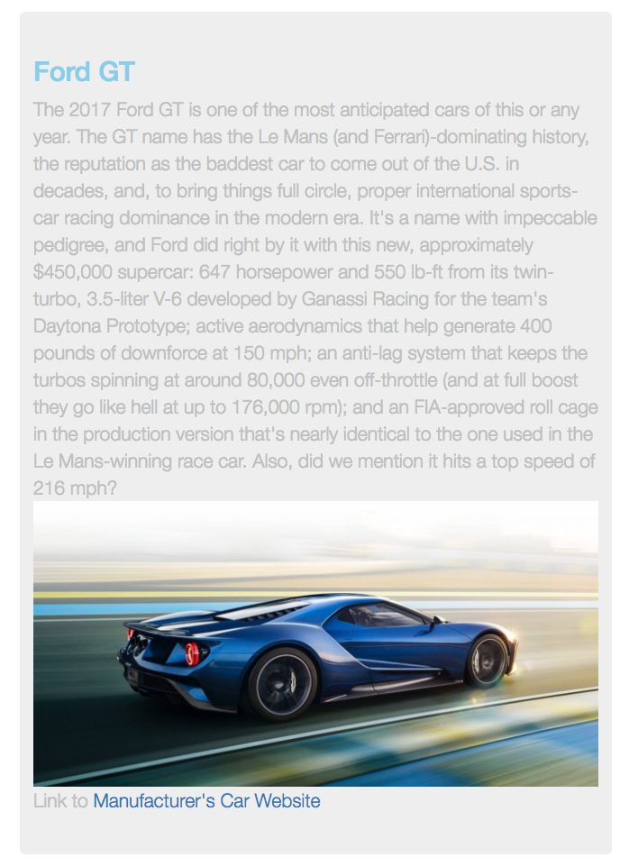
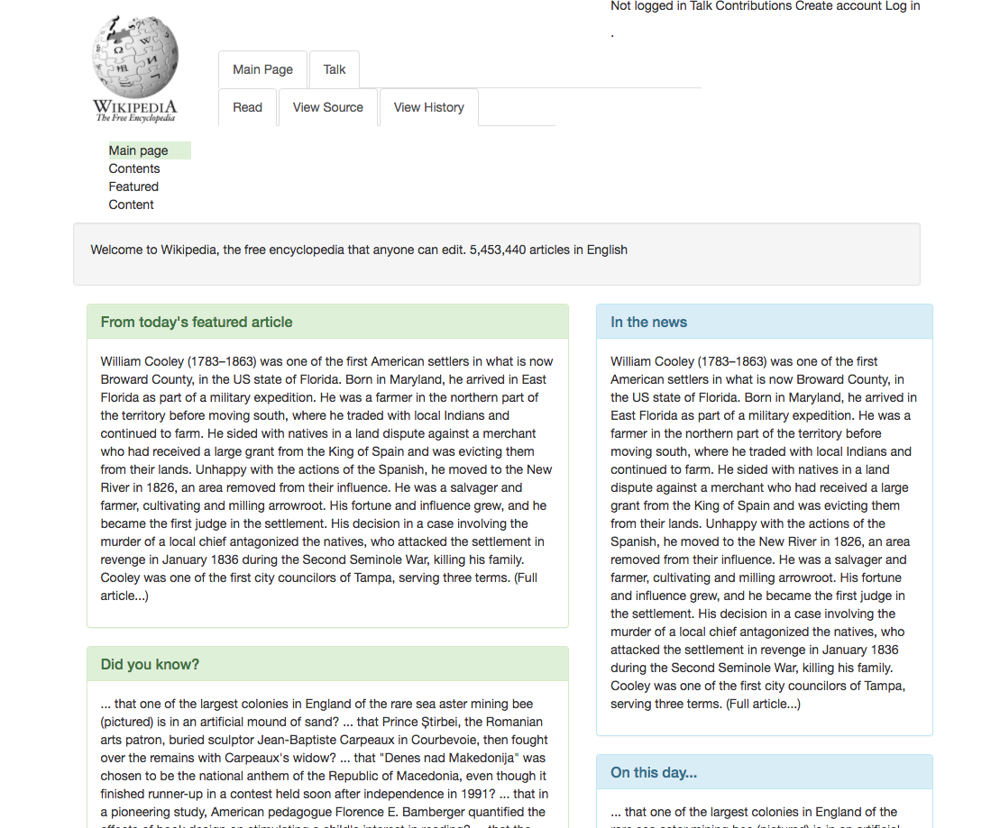
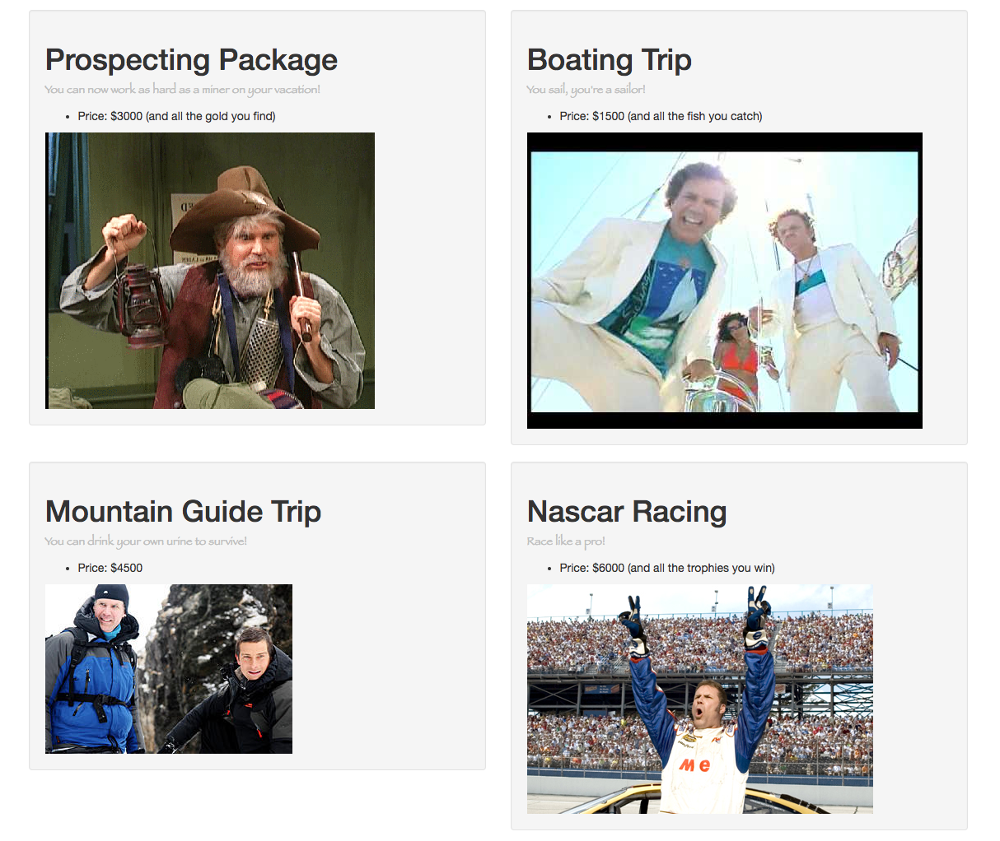
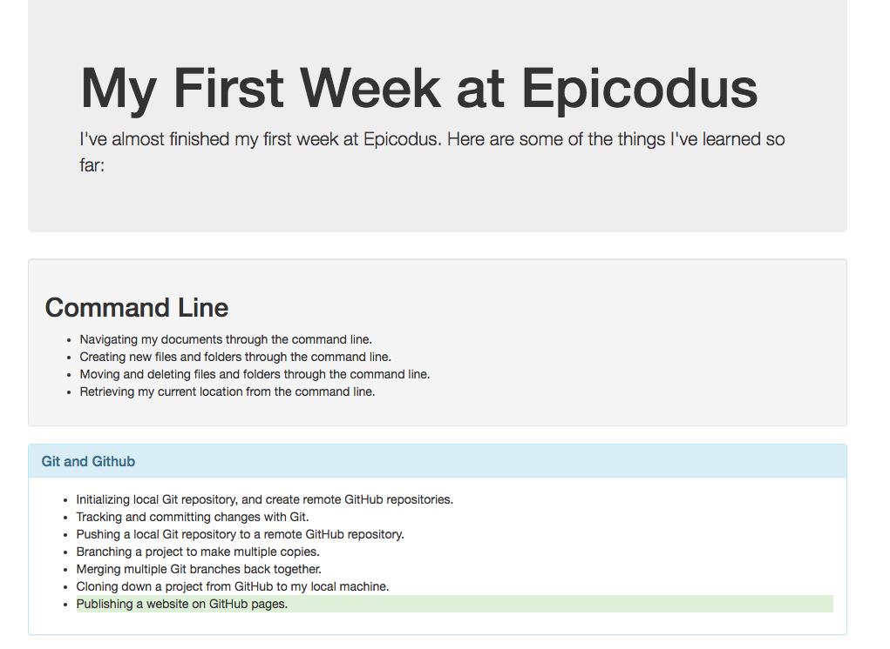
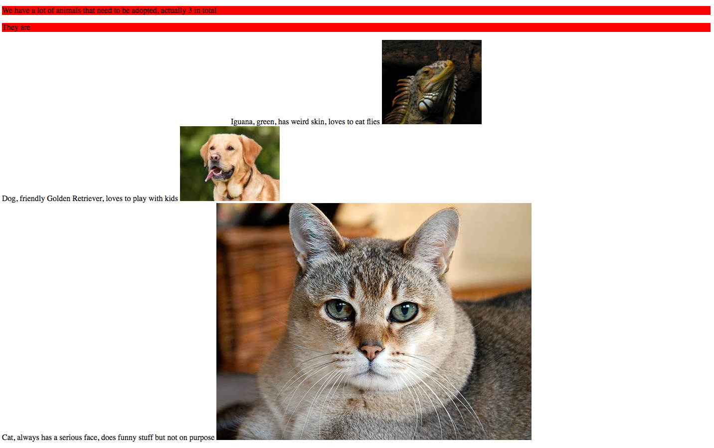

Fast Cars Website
Fastest Production cars 2017, uses Bootstrap, image sizing changing based on view ports to be mobile friendly also, uses HTML, CSS.  Link to this website's repository
Picture of me. My background is working in the IT industry for various small, medium and F500 companies as a business analyst. What coders did for projects was so amazing I had to go and learn how to do it! My current hobbies include hiking, travel, and learning to code.

Wikipedia Remake
Challenge was to remake the Wikipedia site, this is how far it got, still has issue with nested containers, uses HTML, CSS.
 Link to this website's repositoryAlaska
Site made to advertise trips using bootstrap to be mobile friendly, uses HTML, CSS.  Link to this website's repository
Week-in-Review
Basic site to learn how to makeand use container and selectors, uses HTML, CSS.  Link to this website's repository, uses HTML, CSS
Animal Shelter
A basic first site to learn initial coding lesson, uses HTML.  Link to this website's repository